How to edit the website
For the Salinas Surf Club crew. Add people, press and pages, and change the wording yourselves. A change shows up on the site about a minute after you save it.
There are two ways to change the site. Bookmark whichever suits you.
The editor is a set of forms: one for each page, one for each person on the team, one for each press mention.
Ask Claude is a conversation: you say what you want, it shows you the result, and nothing is public until you press Publish.
Open the editorOpen Ask Claude
Both work in the browser on a computer or a phone. There is nothing to install.
- One-time setup
- Signing in
- Finding your way around
- Add someone to the team page
- Add a press mention
- Change the words on a page
- Change the donation links
- Add a new page
- The Instagram posts
- Delete something
- Or ask Claude to do it
- If something goes wrong
Do this onceOne-time setup
Each person who edits the site needs their own free GitHub account. It takes about five minutes.
- Go to github.com/signup and create an account with your own email address. Choose a password only you know.
- Send Kevin the username you picked.
- Kevin adds you to the website. GitHub then emails you an invitation: open it and click Accept invitation.
- Bookmark the editor or Ask Claude, from the buttons at the top of this page.
Why do I need a GitHub account?
The website is really a folder of files: the club's words, its photos, and a recipe that turns them into pages. That folder is kept on GitHub, a service that stores files and remembers every change ever made to them.
Your GitHub account is your key to that folder. The editor is the friendly front door, so you never have to look at GitHub itself after this setup. Because everyone has their own key, every change has a name on it.
Every now and thenSigning in
- Open the editor.
- Click Sign In with GitHub. Ignore the other button; that one is for Kevin.
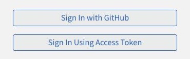
Use the top one. - The first time only, a small GitHub window asks you to authorize Crabbe Construction Editor. That is the right one: the editor is named after the first website Kevin built this way. Click the green Authorize button.
- The editor opens. You stay signed in on that computer or phone, so most days you skip straight to editing.
What is the sign-in actually doing?
The editor asks GitHub who you are. GitHub checks with a small sign-in helper that Kevin runs, then hands the editor a temporary pass. That pass only works on websites you have been added to.
Your password never goes to the editor.
The lay of the landFinding your way around
- Team: one entry per person on the Meet the team page.
- Press: one entry per article or film about the club.
- Extra pages: any page you add yourselves, such as "Our Sponsors".
- Main pages: four forms, one each for the home page, About, Donate and Contact. The home page form also holds the details shown everywhere: the email address, the Instagram name, the nonprofit statement and the Tax ID.
- The New button, at the top right, adds an entry to whichever list you are in.
- The small picture icon at the top left opens the photo library: every photo on the site in one place. The editor calls it Assets. The icon beside it brings the lists back.
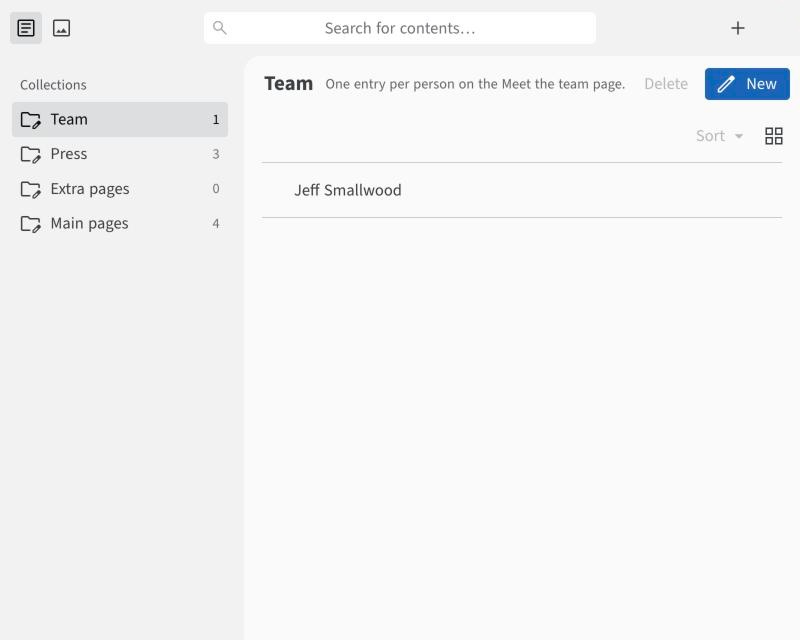
Where do these lists come from?
Each team member and each press mention is one small text file in the website's folder. The editor reads those files and shows them as lists. When you fill in a form and save, the editor writes the file for you.
Board, volunteers, anyone you want to introduceAdd someone to the team page
- Click Team, then New.
- Fill in their Name. A red star beside a box's name means it has to be filled in.
- Fill in their Role, for example "Volunteer surf instructor". This box is optional.
- Add a Photo if you have one: click Browse and pick it, or drag it onto the grey box. A portrait works best. It is shown in a white frame, like a print.
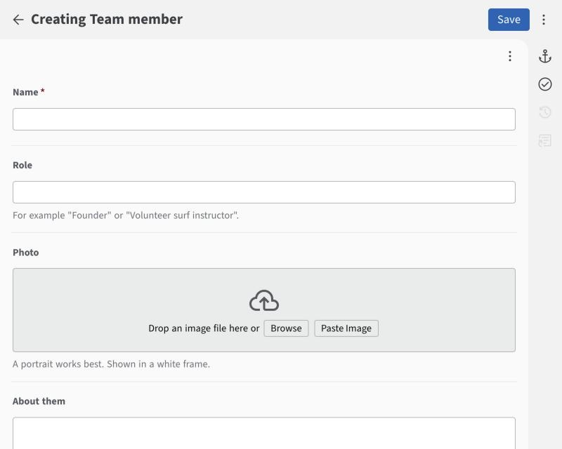
A new team member. Save is at the top right. - Write a sentence or two in About them.
- Set Position: lower numbers show first. People with the same number are listed by name.
- Click Save at the top right. The editor goes back to the list of people.
- Give it a minute, then open the site and look.
The Team link appears in the menu as soon as there is one person on the page, and goes away if there are none.
What happens to the photo I upload?
It is shrunk to web size in your browser before it is saved. A phone photo is often 5 to 10 MB; the copy on the site is a fraction of that, which is what keeps the pages quick to load.
Should we put students on this page?
That is the club's call, not the website's. The site is public and anything on it can be copied. A sensible habit is to ask a parent before a student's name or face goes up.
Articles and films about the clubAdd a press mention
- Click Press, then New.
- Type the Headline exactly as it was published.
- Fill in Published by, for example "Monterey County NOW".
- Pick the Date published: click the little calendar, or Today.
- Choose the Type: Article or Film. It decides whether the button says "Read the article" or "Watch the film".
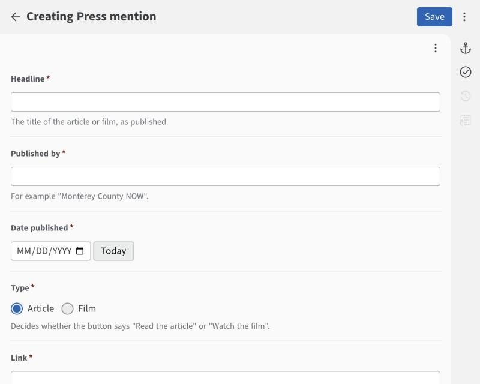
A new press mention. - Paste the Link. Copy it from the address bar of the article or video. It has to start with https://.
- Write a One-line description in your own words.
- Click Save.
The newest mention shows first. You do not have to set the order.
Why not paste the article itself?
The article belongs to the paper that published it. Linking to it is always fine, and it sends readers to the source. A sentence in your own words tells people why to click.
Home, About and ContactChange the words on a page
- Click Main pages, then the page you want: Home page and site details, About page or Contact page.
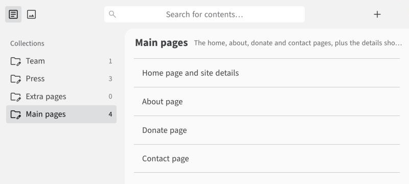
The four main pages. - Change what you need. Each box is labelled with where it shows on the page.
- In a large text box, leave a blank line to start a new paragraph.
- Click Save. It is grey until you change something.
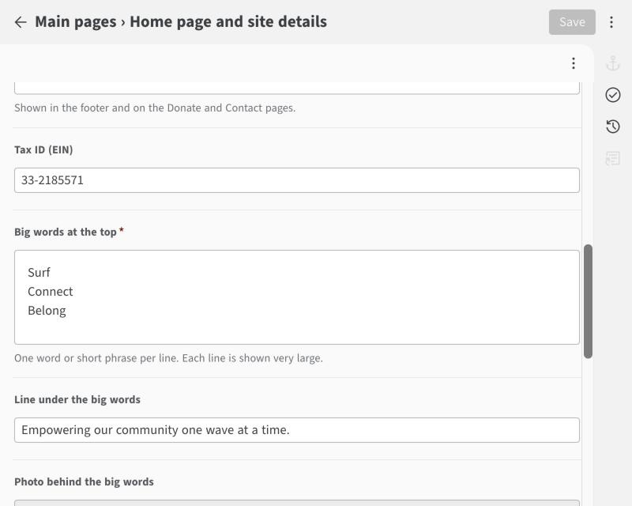
- Big words at the top are the three huge words on the home page. Put one word or short phrase on each line.
- Photo behind the big words is optional. Without one the top of the page is plain blue.
- Quick facts and Steps of a surf day are lists. Each item is its own small numbered form. Add Fact and Add Step add one. Point at an item's grey bar and buttons appear at its right end: the arrows move it up or down, and the ✕ removes it. Remove every step and that section leaves the page.
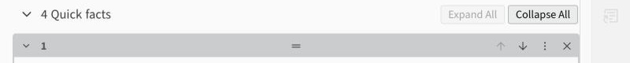
The buttons that appear when you point at an item's bar. - The Email address and Instagram user name are used on every page and on Contact, so you only change them once.
Take care hereChange the donation links
The Donate page shows the club's Zeffy form right on the page, with Venmo and Zelle buttons beside it. The links behind them decide where donations go, so they are checked twice.
- Click Main pages, then Donate page.
- To change a link, paste the new one in its box: Zeffy donation form, Venmo link or Zelle link.
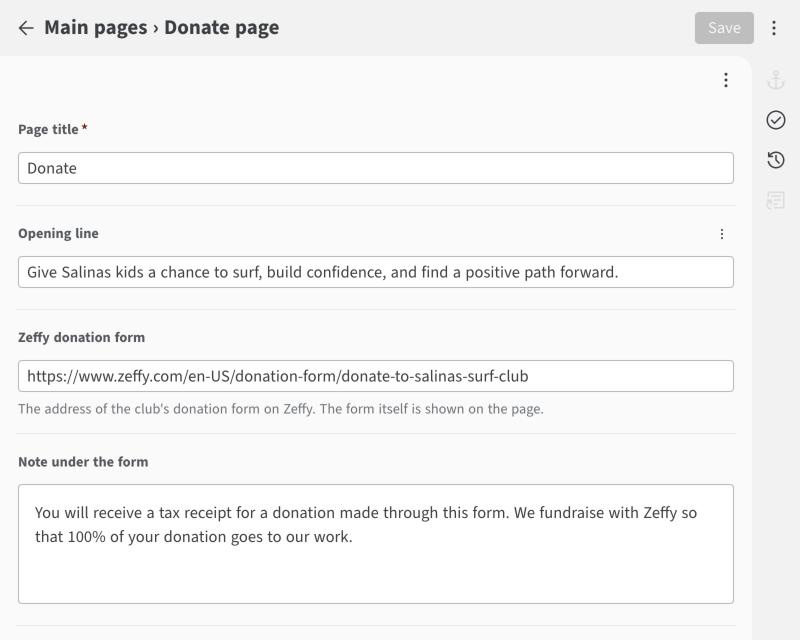
The Donate page form. The Venmo and Zelle boxes are further down. - Click Save.
- Give it a minute, open the Donate page on the real site, and click each button to make sure it lands on the club's own account.
Why does the editor refuse some links?
Each box only accepts an address on the service it is named for: zeffy.com, venmo.com, or Zelle's own site. A typo or a pasted link to somewhere else gets a red message when you press Save, and nothing is saved. The website will not show a donation button that points anywhere else.
Who sends the tax receipts?
Zeffy does. Someone who gives through the form gets a receipt from Zeffy with the club's name on it. The website never handles money or card numbers: the form is Zeffy's own page, shown inside ours.
Gifts by Venmo or Zelle do not go through Zeffy, so no receipt is sent for those unless the club sends one itself.
For anything elseAdd a new page
- Click Extra pages, then New.
- Give it a Page title. The page's address and its link in the menu come from this.
- Leave Show in the menu switched on if it should have a link at the top of the site.
- Write the Page text. The buttons above the box make bold and italic text, links and pictures. The ¶ menu at their left turns a paragraph into a heading, a list or a quote.
- Add Photos underneath if you want a gallery at the bottom.
- Click Save.
Nothing to doThe Instagram posts
The home page has a place for the club's latest Instagram posts. Kevin connects the club's Instagram account to the website once. Until he has, the home page shows only a Follow button.
After that, the website checks Instagram once a day and adds anything new by itself. Post on Instagram as usual and it will appear here by the next morning.
How does that work?
The connection goes through a small service called Behold, which hands the website a list of recent posts. Early each morning the website saves a copy of each new post's picture into its own folder, so the pictures keep working even after Instagram's own links expire.
To take a post off the website, delete it on Instagram and tell Kevin: the saved copy has to be removed by hand.
People, press and pagesDelete something
- Open the team member, press mention or page.
- Click the three dots at the very top right, then Delete.
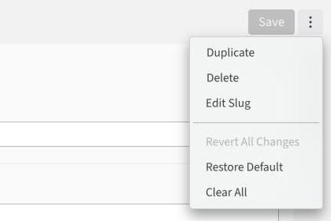
The menu under the three dots. - Click Delete again to confirm.
The four main pages cannot be deleted: their menu has no Delete.
Is it gone forever?
No. GitHub keeps the history of every change, including deletions, so anything removed by mistake can be brought back. Ask Kevin and say roughly when it was deleted.
The quick wayOr ask Claude to do it
Claude is an AI assistant. On the Ask Claude page the website is on the left and Claude is on the right. You say what you want in your own words, and you watch the change appear on the left before anyone else can see it.
- Open Ask Claude and click Sign in with GitHub, the same account as the editor.
- Type what you want and press Send. For example: "Add a new person to the team page", "Shorten the first paragraph on the About page", or "Make the Donate button bigger".
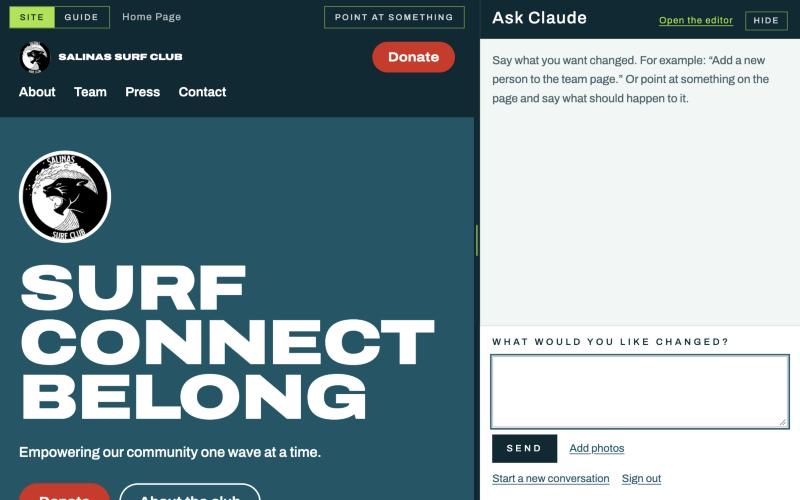
Ask Claude. The website is on the left and Claude is on the right. - To talk about one particular thing on the page, click Point at something above the website, then click the thing itself. Then say what should happen to it.
- To use a photo, click Add photos under the message box and pick it.
- Claude's answer says what it changed, and the website on the left already shows it. If it is what you meant, press Publish. If it is not, say what to fix, or press Discard these changes to drop it.
- Give it a minute, then open the real site and look.
Claude can change wording, team members, press mentions, pages and photos, and how things look: colours, sizes, spacing. It cannot invent a new kind of section or feature; that is still Kevin.
The donation form itself does not run in Claude's preview. A note stands in for it there, and the real form is on the real site.
Drag the bar between the two sides to make Claude's side wider or narrower. Hide tucks it away so the website fills the window, and Show Claude brings it back.
On a phone the two sides become two tabs at the top: Claude and The site. Tap The site to see the change, and Claude to carry on.
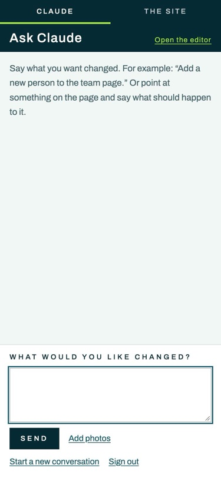
What am I looking at on the left?
A copy of the website built right there in your browser, from the site's files plus whatever Claude has prepared. It is not the real site, so nothing you see there is public until you press Publish.
Can Claude change where donations go?
Only to another address on the same service, and it is told to ask you first. A link to anywhere else is refused before it reaches the preview.
Does it cost anything?
Each request costs somewhere between a few cents and about twenty, which Kevin covers. Use it whenever it saves you time on a real change.
Nothing here can break the site for goodIf something goes wrong
- I saved, but the site looks the same. Wait two minutes, then reload the page. On a phone, pull down to refresh.
- The Save button is grey. Nothing has changed yet.
- I pressed Save and a red bar says fields have errors. Nothing was saved. Each box that needs fixing has a red message above it: a box with a red star was left empty, or a link is not a full address starting with https://. Fix them and press Save again. Show Errors in the red bar jumps to each one.
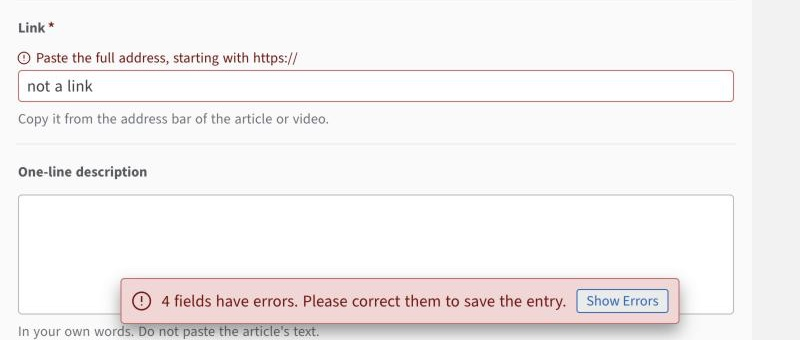
A link that is not a full address is turned away. - I changed something and it looks wrong. Open it again, fix it and save. If you cannot get it back to how it was, ask Kevin: every save is recorded and can be undone.
- It is asking me to sign in again. Click Sign In with GitHub. Nothing is lost.
- Anything else. Text Kevin.